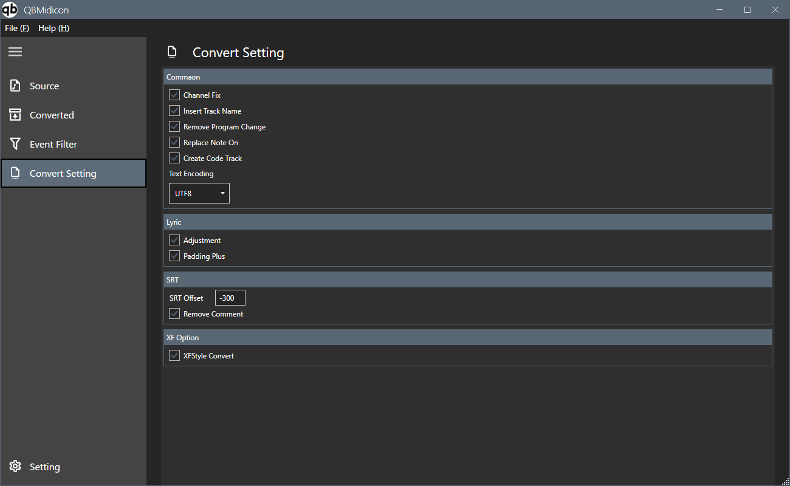

Set various options related to conversion processing

| Category | Item | Value/Status | Description |
|---|---|---|---|
| Common | Channel Fix | On/Off | Fix the channel number of each track to 1 (the drum track will be 10) |
| Insert Track Name | On/Off | Automatically inserts the track name (usually the instrument name) | |
| Remove Program Change | On/Off | Removes the program change event | |
| Replace Note On | On/Off | Replaces note-on events with velocity value 0 with note-off events | |
| Create Code Track | On/Off | Creates a track for code information | |
| Text Encoding | UTF8 etc. | Specifies the character encoding of text data | |
| Lyric | Adjustment | On/Off | Adjust the timing of lyrics data, etc. |
| Padding Plus | On/Off | Add padding (+) to the lyrics separation | |
| SRT | SRT Offset | ms (e.g. -300) | Sets display timing adjustment time for SRT subtitle data |
| Remove Comment | On/Off | Removes comments in SRT data | |
| XF Option | XFStyle Convert | On/Off | Converts extended data (codes, rehearsal marks) in case of XF format |